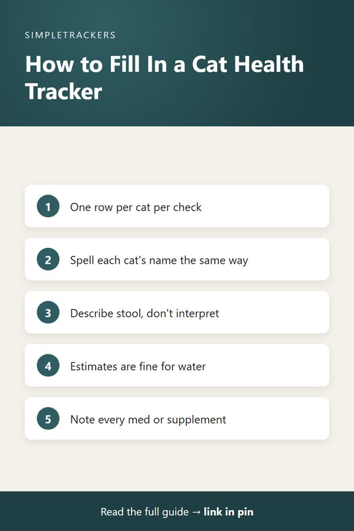

How to Use the Multi-Cat Household Health & Litter Tracker: Complete Walkthrough
← Back to the Complete Multi-Cat Household Guide
Key takeaways
- Ready on day one: a pre-formatted spreadsheet with ten columns that works in Excel, Google Sheets or any spreadsheet app.
- One row per cat per check: each row is one cat at one point in time, so each cat's patterns stay separate.
- Describe, don't interpret: write what you see ("soft," "reduced," "lethargic"); your vet interprets.
- Estimates are fine: water and food columns are for spotting patterns, not laboratory precision.
A Column-by-Column Guide to the Tracker
The Multi-Cat Household Health & Litter Tracker is designed to be simple and intuitive, but it helps to understand exactly what each column is for and how to fill it in. This walkthrough explains every part, so you can start logging with confidence on day one.
The Tracker's Layout: What You Get
- A pre-formatted spreadsheet with ten columns.
- Example rows showing what real daily logging looks like.
- A detailed guide.
The tracker works in Excel, Google Sheets or any spreadsheet application. There's no setup, no subscription and no app to install. Just download, open it in your preferred spreadsheet tool and start logging.
Walking Through Each Column
| Column | What to write | Examples |
|---|---|---|
| Date | The calendar date of the observation | "August 21, 2026" |
| Notes | A brief time-of-day label | "Morning check," "Evening review" |
| Cat Name | The specific cat, spelled the same way every time | "Whiskers," "Shadow," "Luna" |
| Litter Box Visits | How many times you saw this cat use the box | "4," "2," "0 observed" |
| Stool Quality | A plain description of what you saw | "normal," "soft," "loose" |
| Appetite Level | How this cat ate | "normal," "reduced," "refused" |
| Water Intake (ml) | An estimate of how much this cat drank | "about 100ml," "high," "low" |
| Medication Given | Anything you gave this cat | "Probiotic," "None" |
| Activity Level | This cat's movement and energy | "active," "normal," "lethargic" |
| Behavior Notes | Anything else worth noting | "hiding more than usual" |
| Food Amount (grams) | How much food you offered | "80g," "normal portion" |
Date and Notes
Date is the timestamp that organizes everything else; format it however you prefer. If you make several observations in a day, create multiple rows for the same date, with the time in the Notes column.
Notes holds a brief label for context, such as "Morning check," "After breakfast," "Midday" or "Evening review." It tells you and your vet what time of day the observation was made, and whether it's a snapshot or represents a full day of activity.
Cat Name
This is the column that makes multi-cat tracking actually work: it isolates each cat's patterns. Write each cat's name consistently throughout the tracker so you can easily search and filter entries by cat later.
Litter Box Visits
How many times you observed this specific cat using the litter box today, or during the period noted. Just put a number. If you see the same cat use the box several times, add them up. If you didn't see the cat use it, put "0 observed" or leave it blank. This column alone often catches the first signs that something has shifted in a cat's routine.
Stool Quality
A simple description of what you observe in the litter box for this cat: "normal," "soft," "hard," "clumped," "loose." Don't interpret; just describe. This is one of the most useful columns for noticing changes. When your vet asks, "For how many days was it like that?", you have your tracker to refer to.
Appetite Level
- Normal: ate regular portions
- Reduced: ate less than usual
- Enthusiastic: seemed very eager
- Refused: didn't eat offered food
Again, you're describing what you see, not interpreting. Over time this builds a picture of each cat's eating patterns.
Water Intake (ml)
An approximate amount this cat drank, if you can estimate it. You might refill a bowl and note how much is gone, or simply write "about 100ml," "normal amount," "high" or "low." The point is to track whether one cat is drinking more or less than usual over a week or two.
Medication Given
Note any medication, supplement, probiotic, special food or other item you gave this cat, for example "Thyroid pill," "Probiotic," "Special diet meal," "Pain relief supplement" or "None."
Why this column matters
If you're managing cats on medications or dietary adjustments, this creates a clear record of what was given and when. You can later match these entries against the other columns to see if there's a relationship.
Activity Level
What you observe about this cat's movement and energy: "active" (playing, running, jumping), "normal" (typical for this cat), "lethargic" (moving less, resting more), "restless," "playful." Some cats are naturally less active than others, so "normal" means normal for that specific cat, not compared to other cats or a standard.
Behavior Notes
Anything that doesn't fit the structured columns but is still worth noting: "grooming normally," "hiding more than usual," "meowing frequently," "spending more time in sunny window," "seeking human attention," "avoiding the other cats." Write what you observe without interpretation. Your vet will interpret it.
Food Amount (grams)
The approximate amount of food you offered this cat at meals. If you feed measured portions, write the amount ("80g," "120g"). If you feed free-choice or by eye, write "normal portion" or "half usual amount." This helps track feeding consistency and is valuable when discussing dietary changes with your veterinarian.

Real-World Example
Here's what one day, August 21, might look like for two cats, Whiskers and Shadow:
| Column | Whiskers, morning | Shadow, morning | Whiskers, evening | Shadow, evening |
|---|---|---|---|---|
| Litter | 2 | 1 | 2 | 1 |
| Stool | Normal | Normal | Normal | Normal |
| Appetite | Normal | Normal | Normal | Reduced |
| Water | ~80ml | ~60ml | ~40ml | Not observed |
| Medication | None | None | None | None |
| Activity | Active | Normal | Normal | Lethargic |
| Behavior | Playing with toy | Resting by window | Grooming | Hiding in bedroom more |
| Food | 100g | 100g | 100g | 50g |
Reading the example
One evening entry shows Shadow with reduced appetite, less activity and more time hiding. On its own, this might be nothing; cats have off days. But if the pattern continues into the next day or two, you suddenly have data worth bringing to your veterinarian.
Why This Format Works
Each row represents one cat at one point in time. That makes it easy to:
- Follow one cat. Pull together a week of observations for one cat and see if patterns emerge.
- Share what's relevant. Print just the rows for one cat, or just one week, to discuss specific concerns with your veterinarian.
Get Started Today
The best way to understand the tracker is to start using it. Download the Multi-Cat Household Health & Litter Tracker now. You'll get a pre-formatted spreadsheet with example rows already filled in (so you can see exactly how daily logging looks), a printable guide explaining every column in detail, and everything you need to start building clear records of your cats' patterns. For just $14.99, you'll have a tool that pays for itself the first time you bring it to your veterinarian with concrete data instead of vague impressions. Start tracking today and join hundreds of multi-cat owners who now have clarity instead of guessing.